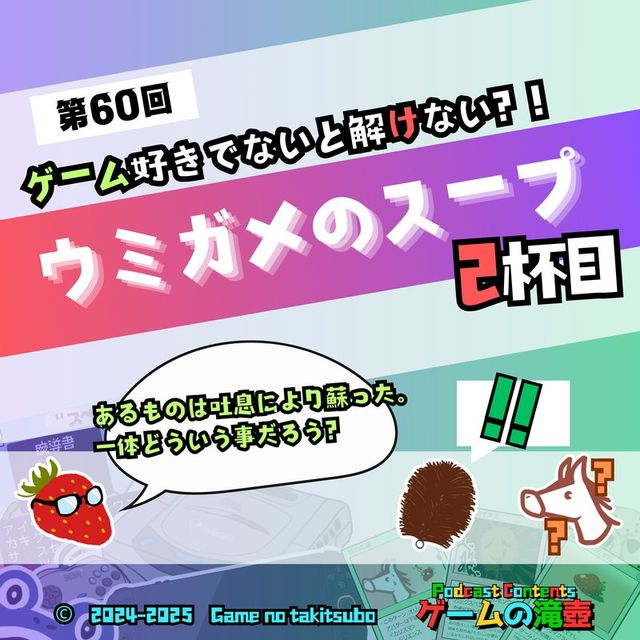

ドンキーコング バナンザ
ポッドキャスト「ゲームの滝壺」で「ドンキーコング バナンザ」が話題に出た回の一覧です。
滝壺での登場 7回トークの中でたびたび話題に出ているタイトルです。
 #942026.02.25💬 トーク内で登場
これってなんのゲームの説明文？ ゲーム概要クイズ！
おまかせください。 ゲームの概要からゲームタイトルを当てまくります！！
#942026.02.25💬 トーク内で登場
これってなんのゲームの説明文？ ゲーム概要クイズ！
おまかせください。 ゲームの概要からゲームタイトルを当てまくります！！
 #752025.10.22💬 トーク内で登場
みんなのゲームにまつわる怖い話！ こんな猿のゲームで捕まりたくない！
リスナーのみなさんから投稿いただいた、ゲームに関係する怖い話を紹介します！
#752025.10.22💬 トーク内で登場
みんなのゲームにまつわる怖い話！ こんな猿のゲームで捕まりたくない！
リスナーのみなさんから投稿いただいた、ゲームに関係する怖い話を紹介します！
 #712025.09.24💬 トーク内で登場
ゲームにまつわる怖い話！ 課金はもうこりごりだ～
まだまだ残暑が続くということで、おのおの怖い話を持ち寄りましたが、果たして…？ ゲームに関係する怖い話をお持ちの方、ぜひ教えてください。
#712025.09.24💬 トーク内で登場
ゲームにまつわる怖い話！ 課金はもうこりごりだ～
まだまだ残暑が続くということで、おのおの怖い話を持ち寄りましたが、果たして…？ ゲームに関係する怖い話をお持ちの方、ぜひ教えてください。
 #652025.08.20💬 トーク内で登場
Öoo（なぜか読めない）圧倒的好評の爆弾いもむしアクションパズル、爆誕
圧倒的好評すぎるアクションパズルゲームのÖoo、その前作のElecHead、ついでに虫のアクションパズルゲームつながりでCOCOONについても話します！
#652025.08.20💬 トーク内で登場
Öoo（なぜか読めない）圧倒的好評の爆弾いもむしアクションパズル、爆誕
圧倒的好評すぎるアクションパズルゲームのÖoo、その前作のElecHead、ついでに虫のアクションパズルゲームつながりでCOCOONについても話します！

#602025.07.16💬 トーク内で登場 ゲーム好きでないと解けないウミガメのスープ 2杯目 【新解釈】ある男はウミガメのスープを食べた後に自殺した。一体、なぜ？？（答えはゲーム関係） #572025.06.25💬 トーク内で登場
大神、スプラトゥーン、勇者のくせになまいきだ。…今夜決定！ 一週間の各曜日にふさわしいゲーム！！
長い一週間、何のゲームを遊べばいいか困る日はありませんか？ 各曜日にふさわしいゲーム、すべて決めます！
#572025.06.25💬 トーク内で登場
大神、スプラトゥーン、勇者のくせになまいきだ。…今夜決定！ 一週間の各曜日にふさわしいゲーム！！
長い一週間、何のゲームを遊べばいいか困る日はありませんか？ 各曜日にふさわしいゲーム、すべて決めます！
 #462025.04.09💬 トーク内で登場
チョップと化学工場～ゴールデンアイ007～
NINTENDO64用ソフト「ゴールデンアイ007」について収録をしようとしていたら、ちょうど007の新作が発表された回です。
#462025.04.09💬 トーク内で登場
チョップと化学工場～ゴールデンアイ007～
NINTENDO64用ソフト「ゴールデンアイ007」について収録をしようとしていたら、ちょうど007の新作が発表された回です。
TALKED TOGETHER同じ回で話題に出たタイトル
🎧 気になった回は、各ページのプレイヤーからすぐ再生できます。
「ドンキーコング バナンザ」の話がもっと聴きたくなったら、おたよりでリクエストしてもらえると番組が喜びます。